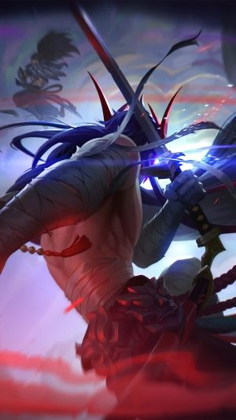

Hablemos un poco sobre Yone
Yone es un personaje del popular juego League of Legends (LoL), y su historia se ha desarrollado a lo largo de varios eventos y actualizaciones del juego. Aquí tienes un resumen de la historia de Yone hasta mi última actualización en septiembre de 2021: Yone, cuyo nombre completo es Yone Tetsuya, es un maestro de la espada que vivió en Ionia, una tierra de paz y espiritualidad. Él y su medio hermano mayor, Yasuo, compartían un profundo vínculo, y ambos entrenaban juntos en las artes del Way of the Wind, una técnica de combate con espada que aprovecha el viento como arma. Sin embargo, la tragedia golpeó a los hermanos cuando una noche, durante una feroz tormenta, Yone fue asesinado y Yasuo fue acusado injustamente de su muerte. Yasuo huyó de la acusación y se convirtió en un vagabundo, buscando redimir su honor y encontrar la verdad detrás de la muerte de su hermano. Mientras tanto, Yone fue resucitado en forma de un demonio de la espada llamado Azakana, debido a su ira y resentimiento después de su muerte. Yone luchó contra la posesión demoníaca y, finalmente, pudo controlarla, pero su humanidad se había perdido en gran medida. En un punto de la historia, Yasuo y Yone se encontraron en un enfrentamiento épico. Yasuo, aún buscando respuestas, y Yone, luchando contra su naturaleza demoníaca, chocaron en un combate que finalmente permitió a Yone recuperar algo de su humanidad perdida. Después de la batalla, Yone se retiró para meditar sobre su pasado y sus acciones. En una actualización posterior, Yone se convirtió en un campeón jugable en League of Legends, y su historia se amplió. Ahora, busca reconciliarse con su oscuro pasado y redimirse. Yone es un maestro de la espada con habilidades únicas y una profunda conexión con el poder del viento.